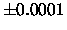

| Burger |
When Mr. and Mrs. Clinton's twin sons Ben and Bill had their tenth birthday, the party was held at the McDonald's restaurant at South Broadway 202, New York. There were 20 kids at the party, including Ben and Bill. Ronald McDonald had made 10 hamburgers and 10 cheeseburgers and when he served the kids he started with the girl directly sitting left of Bill. Ben was sitting to the right of Bill. Ronald flipped a (fair) coin to decide if the girl should have a hamburger or a cheeseburger, head for hamburger, tail for cheeseburger. He repeated this procedure with all the other 17 kids before serving Ben and Bill last. Though, when coming to Ben he didn't have to flip the coin anymore because there were no cheeseburgers left, only 2 hamburgers.
Ronald McDonald was quite surprised this happened, so he would like to know
what the probability is of this kind of events. Calculate the probability
that Ben and Bill will get the same type of burger using the procedure
described above. Ronald McDonald always grills the same number of hamburgers
and cheeseburgers.
a line with an even number [2,4,6,...,100000], which indicates the number of
guests present at the party including Ben and Bill.
Note: a variance of

is allowed in the output due to rounding
differences.
3 6 10 256
0.6250 0.7266 0.9500